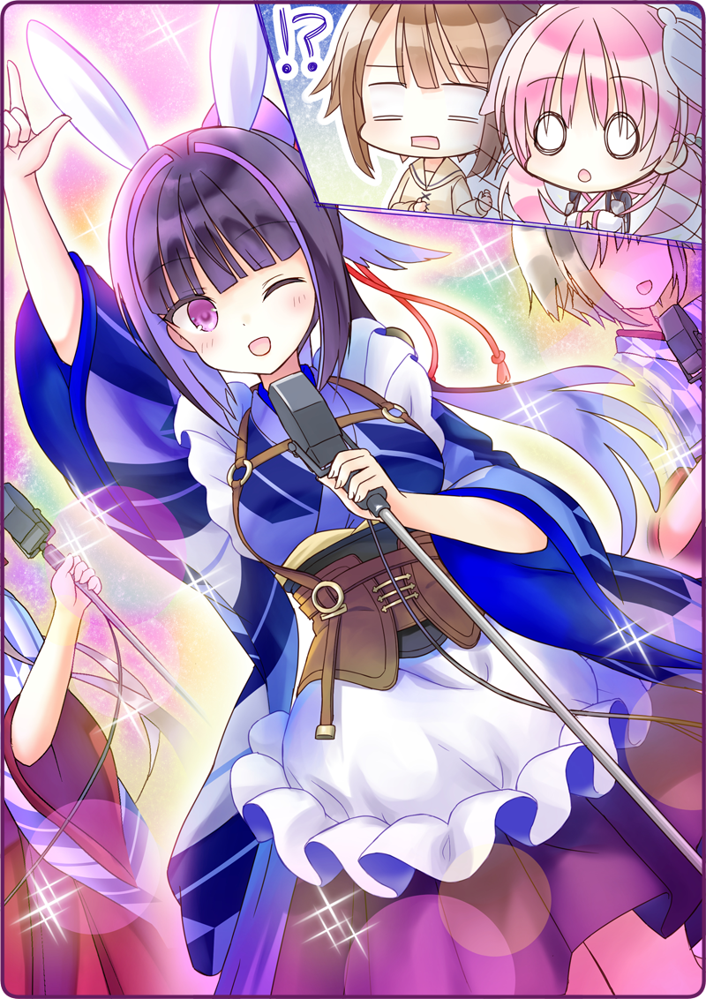

Quận Sáu Hoàng Đô—
Một khu vực vốn đã là phố đèn đỏ ngay từ thời tiền chiến.
Dù đang là ban đêm, ánh đèn neon đủ thứ màu sắc vẫn soi sáng một vẻ mê hoặc, khiến đường chính trông còn rực rỡ hơn cả ban ngày.
Do thời kỳ quản chế ánh sáng mà nơi này hoàn toàn bị bỏ rơi suốt giai đoạn cuối cuộc đại chiến, nhưng trong vài năm gần đây nó đã được hồi sinh, thậm chí còn náo nhiệt hơn cả khi xưa.
Usami: “Đứng đây trông mình lạc quẻ thật…”
Những người lớn qua đường cứ len lén liếc trộm chúng tôi – những kẻ còn đang bị choáng ngợp trong ánh đèn neon.
Haizakura: “Oa—... Oa~~”
Về phần Haizakura, em đang tròn xoe mắt theo một nghĩa khác so với tôi.
Haizakura: “Usa-san, tuyệt quá đi! Phố xá cứ như đang mở hội ấy! Nơi này lúc nào cũng vui nhộn thế này ạ?”
Xem chừng bị phấn khích bởi bầu không khí nơi đây hay sao, mà chiếc ống khói sau lưng em cứ nhả hơi nước từng đợt từng đợt một.
Haizakura: “Cơ mà, nơi này là như thế nào vậy ạ?”
Usami: “Ờ… là chỗ người lớn vui vẻ uống rượu… chăng…?”
Tôi chẳng biết nói cho em nghe tới đâu thì nên, thành ra lời giải thích của tôi mơ hồ đến lạ.
Usami: “Trước hết cứ đến chỗ Karasuba-san đã. Theo bản đồ Okunomiya-san vẽ thì nó chỉ ở đâu đó quanh đây thôi.”
Haizakura: “Vâng!”
Chúng tôi lướt qua những con người đang hưng phấn trong men say.
Đôi lúc lại có người dừng lại ngắm Haizakura, để rồi khi nhận ra em là Hình nhân thì bắt đầu giữ khoảng cách.
Cay thật đấy, song tôi hiểu rằng đây là lẽ tất yếu. Mặc dù vậy, cái cảm giác bức bối vẫn ứ đọng trong tôi.
May mắn thay, nhân vật chính lại đang mơ màng ngắm nhìn ánh đèn neon mà chẳng để tâm đến những ánh mắt đó chút nào.
Và rồi—
Usami: “Là chỗ này… nhỉ?”
Tại nơi được đánh dấu trên bản đồ, là một căn tiệm được tô điểm nhờ hằng hà sa số bóng đèn neon.
Tấm biển ghi [Hộp đêm La-Bit’s], ngoài ra còn có nhiều không kể xiết những chậu hoa lan hồ điệp xếp thẳng hàng ngoài cửa vào.
Usami: “... Ô? Có cả hoa từ quán Mèo Đen mình này.”
Có một chiếc thẻ ghi dòng chữ [Từ toàn thể Trà quán Mèo Đen] cài trên một chậu lan hồ điệp trắng.
Haizakura: “Đây là cửa hàng gì vậy nhỉ?”
Usami: “Là một nơi người lớn có thể vừa xem biểu diễn vừa thưởng rượu.”
Haizakura: “Nghe thích ghê.”
Đôi mắt của Haizakura một lần nữa lại sáng lấp lánh, nhưng rồi chừng như để ý thấy gì đó, em kéo tay áo tôi.
Haizakura: “Usa-san, nơi này hình như vẫn chưa mở cửa ạ.”
Usami: “Hả? Thật này.”
Tôi nhìn vào tờ giấy thông báo treo trên cửa.
Xem ra họ đang đóng cửa để tân trang, và sẽ mở cửa trở lại vào ngày kia.
Usami: “Rắc rối rồi đây. Có thật là chỗ này không nhỉ.”
Tôi rút từ túi áo ra chiếc chìa khóa quán Mèo Đen mà Okunomiya-san giao cho.
Haizakura: “CHO HỎI!”
Usami: “Hả?!”
Không biết tự lúc nào, Haizakura đã đứng trước cửa hộp đêm và gõ cửa.
Haizakura: “Karasuba-san có ở đây không ạ?!”
Usami: “Oái oái, Haizakura! Vậy là không được đâu!”
Haizakura: “Nhưng mà, có thể Karasuba-san đang ở trong đó…”
Usami: “Chuyện đấy thì…”
Đúng lúc tôi vừa kéo Haizakura lùi ra sau thì cánh cửa bất ngờ bật mở.
Quản lý: “Thiếu kiên nhẫn quá nhỉ. Đợi đến lúc quán mở cửa rồi hẵng quay lại nhé.”
Người vừa mới mở cửa là một chị gái đứng tuổi khoác trên người bộ đầm lộ khe ngực đầy táo bạo.
Ánh nhìn của chị ta thật áp đảo, hẳn là nhờ lớp trang điểm tôn lên vẻ ấn tượng cho đôi mắt.
Quản lý: “Ôi chà? Hai đứa là…”
Usami: “E-Em xin lỗi đã làm phiền, chúng em đến từ quán Mèo Đen ạ! Ơ…”
Haizakura: “H-Hân hạnh được gặp chị, em tên là Haizakura ạ. Em là đồng nghiệp tại quán Mèo Đen của Karasuba-san ạ. Em vẫn còn là người mới, nên mong được chị chiếu cố ạ.”
Usami: “Cho em hỏi Karasuba-san có ở đây không ạ? Chúng em tới đưa đồ cậu ấy để quên…”
Thấy tôi cúi đầu thật thấp, Haizakura cũng cúi đầu theo tôi.
Chị gái nọ nhìn xoáy vào cả tôi và Haizakura từ đầu tới chân.
Quản lý: “Hừm… mấy đứa là nhân viên mới của quán Mèo Đen hả? Mà thôi, vào đi.”
Usami: “Hơ? À không, tụi em tới để đưa Karasuba-san chìa khóa thôi…”
Quản lý: “Con bé giờ vẫn đang làm đấy. Vào xem đi.”
＊ ＊ ＊
Bên trong quán có phần tĩnh lặng quá mức so với vẻ hào nhoáng bên ngoài.
Chiếc sofa làm bằng vải nhung cao cấp choán hết một không gian rộng rãi, tạo cảm giác xa xỉ khi ngồi vào.
Đặt trên mặt bàn dày cộp nào là những chai rượu đắt tiền, nào là những xô chậu chất đầy đá bên trong, và nào là những hoa quả gọt sẵn được bài trí rất đẹp mắt.
Vô số đèn hắt được lắp đặt ở hai bên lối vào và trên tường, phản chiếu lên mặt tường và trần nhà có lắp gương, tạo nên một chiều sâu ma mị.
Tuy nhiên, chiếc đèn chùm sang trọng treo trên trần kia đang bị tắt, khiến toàn sảnh có cảm giác hơi âm u.
Nơi này khiến tôi cảm tưởng như mình vừa lạc vào một thế giới khác vậy.
Haizakura: “Có hơi yên tĩnh nhỉ…”
Usami: “Tôi tưởng hộp đêm thì sẽ phải nhộn nhịp hơn thế này cơ…”
Tôi dáo dác nhìn xung quanh sảnh, lòng sinh lo.
Quản lý: “Nào, chị đặc cách cho mấy đứa xem biểu diễn trước đấy. Sớm nhất luôn nhé.”
Cứ như thể những lời chị gái nói là tín hiệu, cơ man nào những đèn chiếu điểm từ trên trần nhà bắt đầu rọi sáng toàn sảnh.
Đứng tại đó, là một nhân ảnh mà chúng tôi vốn đã nhẵn mặt.

Người ấy chắp hai tay trước ngực và hô vang.
Chiếc tai thỏ trên đầu cô đung đưa.
Sau đấy, khoảng sáu vũ nữ bận đồ thỏ non xuất hiện từ trong cánh gà với đôi tay dang rộng.
Vũ nữ: “Vâng, thưa cô!”
Karasuba-san cầm mic cất cao giọng, rồi thì đến lượt mấy cô vũ nữ đằng sau cũng nhại lại theo.
Karasuba-san cúi đầu đầy kính cẩn.
Sau đó, tốp vũ nữ cũng hành lễ với tất cả sự thanh lịch.
Giữ nguyên tư thế một lúc, cuối cùng Karasuba-san cũng thẳng lưng lên và ngẩng cao khuôn mặt rạng rỡ.
Haizakura: “Myu?!!!”
Usami: “Hở??”
Karasuba-san đột nhiên lột xác.
Cùng tông giọng rạng ngời và hân hoan tôi chưa nghe bao giờ, cô chỉ thẳng vào quả cầu thủy tinh phía trên đầu.
Haizakura / Usami: ““AI KIA?!!!””
Tiếng nhạc du dương, cùng những ánh đèn nhấp nháy.
Tâm điểm của hết thảy, là một tiết mục trình diễn vũ đạo nhằm mua vui cho người xem.
Cô ấy lên tiếng động viên các vũ nữ trong khi vẫn không ngừng làm mẫu cho họ.
Haizakura: “K-Karasuba-hyan……”
Trước một Karasuba-san đang tươi cười nhảy múa trên sân khấu, chúng tôi chẳng thể nào để tâm tới buổi diễn cho nổi.
Usami: “Cho hỏi, Karasuba-san đang…”
Quản lý: “Trước chiến tranh thì con người dạy Hình nhân nhảy múa, thế mà giờ… lại thành ngược lại mất rồi.”
Chị gái khi nãy ngồi xuống cạnh tôi.
Chị ấy bảo mình là người quản lý hộp đêm này.
Quản lý: “Hồi trước, con người và Hình nhân Cơ khí từng cùng biểu diễn với nhau đấy.”
Usami: “Chuyện đó… đúng là em có từng nghe.”
Quản lý: “Nhưng rồi, khi chiến tranh nổ ra thì chẳng biết từ lúc nào mà Hình nhân lại bị trưng dụng làm công cụ… mãi đến khi tàn cuộc vẫn chẳng khác đi. Còn có nhiều vụ việc Hình nhân nổi loạn nữa mà…”
Haizakura: “... Là vậy, sao ạ?”
Quản lý: “Ừ, Hình nhân từng bị phân biệt đối xử kinh lắm đấy.”
Haizakura trưng ra một vẻ mặt khó hiểu, nhưng câu chuyện đó thật sự rất thịnh hành.
Sở dĩ quán Mèo Đen khốn đốn đến thế này chủ yếu là do những thành kiến như vậy vẫn chưa hết nguôi ngoai.
Haizakura: “N-Nhưng mà, vẫn có nhiều vị khách đến với quán Mèo Đen mà! Có những người còn mến mộ Hình nhân chúng em nữa…!”
Quản lý: “Ừ, chị đây cũng thế mà. Bởi chị còn nhớ cái thời Hình nhân và con người vui vẻ bên nhau.”
Haizakura: “A…”
Haizakura: “Nhưng mà… nếu vậy, tại sao Karasuba-san lại phải đi dạy biểu diễn tại ‘hộp đen’ này ạ?”
Đó chính là điều làm tôi phân vân nãy giờ.
Những lúc thế này tôi mới thấy ghen tị với tính thật thà của Haizakura.
Quản lý: “Không nhớ là khi nào nữa, cơ mà chị từng nhận con bé làm học viên.”
Haizakura: “Dạ?!”
Quản lý: “Con bé muốn học cách làm sao để tiêu khiển cho khách. Chị bảo rõ ràng phong cách giữa hai quán khác nhau hoàn toàn, nhưng con bé lại bảo có thể đây sẽ trở thành kinh nghiệm về sau, thành ra chị đã nghiêm túc chỉ dạy con bé đủ điều.”
Usami: “V-Vậy nên cậu ấy mới nhảy được như thế kia ạ…”
Quản lý: “Con bé nhớ hết những gì chị dạy. Chẳng có học trò nào xuất sắc hơn thế đâu.”
Usami: “Thì tại, cậu ấy là Hình nhân mà…”
Quản lý: “Vũ nữ tại [La-Bit’s] này toàn người mới, mà chị thì cũng có tuổi rồi, nên chị nhờ cô học trò ưu tú kia chỉ dạy tụi nó luôn.”
Trong khi tôi còn đang ca cẩm, thì màn trình diễn đã gần đến hồi kết.
Quản lý: “Karasuba coi bộ tới giờ vẫn còn ngại nhảy nhỉ… nhưng một khi đã lên sân khấu rồi thì vũ đạo của con bé sẽ như thế kia đó.”
Trên bục diễn, mọi người đều đang mỉm cười mà tạo dáng kết màn.
Quá sức mãn nhã—...
Usami: “Hii…!”
Trong khi mọi người đều đang mỉm cười mà tạo dáng—
Cũng với khuôn miệng tươi tắn đó, ánh mắt của Karasuba-san va phải chúng tôi.
Dẫu cũng đang cười như bao người, ánh mắt của cô ấy đột nhiên bị bao phủ trong một thứ cảm xúc hắc ám không nói nên lời.

 “Nào, mọi người ơi! Phô diễn thành quả luyện tập của chúng ta thôi!”
“Nào, mọi người ơi! Phô diễn thành quả luyện tập của chúng ta thôi!”